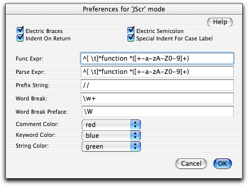

JavaScript mode is intended for editing of external JavaScript documents (suffix .js). It may also sometimes be a better choice when you are editing JavaScript inside an HTML document. Select JScr in the mode menu in the status bar to manually switch to JavaScript mode.
JavaScript mode provides keyword coloring, word completion, and the basic editing features, indent on return, electric semicolon, electric braces, and special indent for case label.
In JavaScript mode completions of a number of statements are available: function, for, while, switch, case, do, if, and else. Typing ctrl-tab after typing any of these statements expands them to a template. Two examples:
Typing
for
and then typing ctrl-tab gives
for (|; •; •) {
•
}
•
Typing
while
and then typing ctrl-tab gives
while (|){
•
}
•
The funcs menu lists all functions defined in the document. Selecting a function in the menu lets you jump to it.
Cmd-double-clicking on a keyword or builtin property or function makes Alpha jump to a JavaScript reference guide. This requires that you install the JavaScript reference for Alpha by Wolfgang Haeuptli.
The cmd-double-clicking also works in HTML mode.
The JavaScript preferences dialog is opened using .

The JavaScript support in HTML mode is the same as in JavaScript mode, except that there is no special indent for case label, and the funcs menu has another functionality in HTML mode. You can say that between <SCRIPT> tags in an HTML document Alpha behaves as if it were is JavaScript mode.